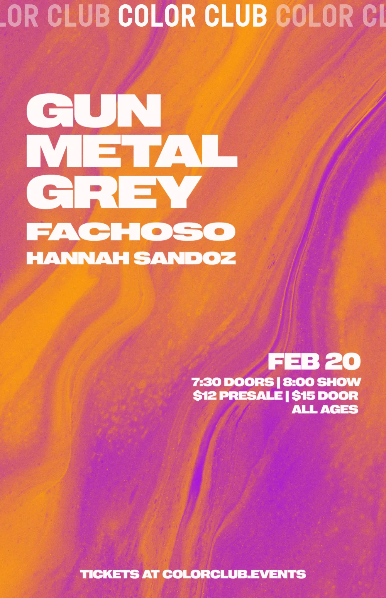

COLOR CLUB CHICAGO: POSTER DESIGN
In 2024 I started doing photos for Color Club, a local music venue my friend Reilly is a booking manager at. I eventually got an opportunity to start desiging posters for upcoming shows. This is a rather recent project, so I only have a few to share at the moment. As for these poster designs, I'm intentionally trying to create very saturated pieces, after all it is the Color Club. I'm using design principles I learned in school to create clear and accessible pieces. I also want to make something unique that stands apart from other venues. I'm pretty thrilled to make more :)


